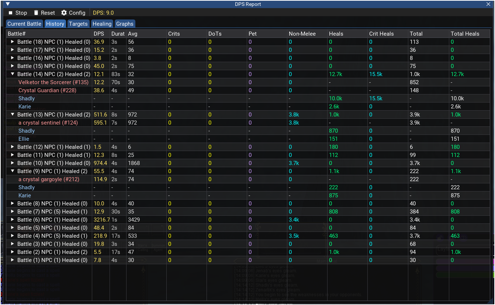

Last Updated: 2026-06-08
Floating Combat Text
Floating Combat Text (FCT) displays damage and healing numbers directly in the 3D game world, anchored to the bodies of your targets and your own character. Numbers pop in, float upward in a spreading arc, and fade away — giving you an instant visual sense of your combat output without looking at any window.
Enabling FCT
FCT is disabled by default. To turn it on:
- Type
/mydps fctin chat, or - Open Settings → FCT tab and check Enable FCT
What You See
When FCT is active, damage and healing events appear as floating numbers near the relevant target:
- Outgoing damage — Plain numbers (e.g., 2.5k) floating up from the target
- Healing — Numbers with a + prefix (e.g., +3.8k) floating up from the healed player
- Incoming damage — Numbers with a - prefix (e.g., -150) floating up from your character
Each number pops in at 1.4x size, shrinks to normal over 0.3 seconds, then floats upward in a slight arc. During the last 40% of its lifetime, the number fades to transparent. When multiple hits land on the same target in quick succession, they spray out at different angles to avoid overlapping.
Choosing What to Display
In Settings → FCT, you can toggle each damage type individually:
| Toggle | What It Shows |
|---|---|
| Melee | Melee auto-attacks (hit, slash, crush, etc.) |
| DD (Direct Damage) | Spell direct damage |
| DoT | Damage-over-time ticks |
| Pet | Pet melee and spell damage |
| Crit | Critical hits (melee and spell) |
| Heals | Direct heals you cast |
| Crit Heals | Critical/exceptional heals |
| Hit By | Damage you receive |
| DS (Damage Shield) | Damage shield procs |
Customizing Appearance
The FCT tab in Settings provides several sliders to control how floating text looks and behaves:
| Setting | Range | Default | What It Does |
|---|---|---|---|
| Base Font Size | 12 – 48 | 24 | Base size of floating numbers |
| Font Scale | 0.5 – 3.0 | 1.5 | Multiplier applied to the base font size |
| Icon Scale | 0.1 – 1.0 | 1.0 | Size of icons displayed next to numbers |
| Float Distance | 30 – 300 | 150 | How far numbers travel upward before fading |
| Arc Scale | 0.0 – 3.0 | 1.0 | How wide numbers spread sideways (0 = straight up) |
| Shadow Offset | 0.0 – 5.0 | 2.0 | Thickness of the dark outline behind numbers for readability |
| Lifetime | 1.0 – 5.0 sec | 2.5 | How long each number stays visible |
Colors
Each damage type has its own color, and you can customize every one. The FCT configuration table shows all 19 damage types with a color swatch next to each. Click the swatch to open a color picker. If the Settings window is wide enough, the table automatically arranges several damage types side by side on each row to use the extra space; narrow the window and they stack back into a single column. The default color scheme is:
- White — Standard melee (hit, crush, kick, bash, slash, pierce, bite)
- Red — Backstab, incoming melee damage (hit-by)
- Yellow — Critical hits, DoTs, incoming non-melee/spell damage (hit-by-non-melee)
- Cyan — Spell direct damage, critical heals
- Green — Damage shield procs
- Teal — Heals
- Purple — Pet damage
- Gray — Misses (display only, not shown as FCT)
Use the Distinct Melee toggle to give each melee attack type (hit, kick, bash, slash, etc.) its own color instead of sharing one.
Icons
FCT can display small icons next to the damage numbers. There are two independent icon controls:
- Icons checkbox — Turns icons on or off globally. When off, no icons appear regardless of other settings.
- Use Spell Icons option — When icons are on, this switches each damage type to use actual spell icons from the game instead of generic default icons.
You can also customize the icon for each individual damage type using the icon picker. Click the icon button next to a damage type in the FCT configuration table to open the icon picker dialog. The picker has two tabs — Spell Icons and Item Icons — that you switch between to browse the available icons. Next to each type are two small buttons: the remove button (a circle with a slash) sets that damage type to show no icon at all, and the reset button (an undo arrow) restores its default icon. Hover either button to see a tooltip describing what it does.
Bone Anchoring
Floating text is anchored to specific body parts (bones) on character models. This determines where numbers appear relative to the target:
| Setting | Default | What It Controls |
|---|---|---|
| Player Bone | Chest | Where healing and incoming damage numbers appear on your character |
| Other Bone | Legs | Where outgoing damage numbers appear on enemies and other targets |
You can choose from 28 bone positions including Head, Helm, Chest, Pelvis, Arms, Legs, and more. Experiment to find what looks best for your preferred camera angle.

Floating combat text showing healing numbers anchored to group members.